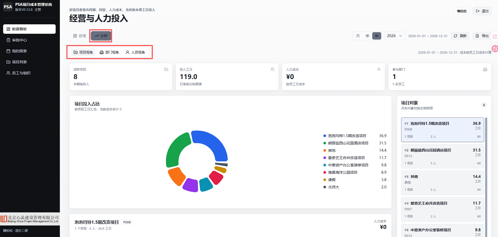

考勤统计手工
员工出勤、项目投入、请假和加班靠人工汇总。人多、项目多、周期一长，统计就变成反复核对。
Where The Money Leaks
建筑行业项目管理和造价咨询企业，常见增长路径是依托资源、口碑和交付能力快速承接项目。扩张速度一起来，后台管理如果仍靠人工表格，就会先在项目成本和薪资确认上暴露压力。
员工出勤、项目投入、请假和加班靠人工汇总。人多、项目多、周期一长，统计就变成反复核对。
薪酬核算缺少在线确认链路，财务需要等待资料、跟进确认、反复修订，执行速度慢，透明度也不够。
项目用了多少人、花了多少人工成本、回款覆盖到什么程度，往往要月底或出问题后才能拼出来。
经营层和管理团队陷入基础统计、追问、核对、补材料，真正该做的项目预警和经营决策被挤掉。
Operating Model
核心不是让员工多填表，而是让每一笔人力投入都能回答三个问题：投到了哪个项目、谁确认过、最终形成多少成本。
按周选择项目，填写每天投入工日和加班情况，形成项目用工数据源。
一张周表里多个项目分别拆开，避免一个负责人审批不属于自己的内容。
项目负责人审批自己负责的项目块，确认该项目投入是否真实合理。
项目块都通过后，部门负责人从人员和部门成本角度做最终把关。
只有审批通过的数据进入正式统计，用于项目成本、部门投入和人员分析。
What Changed
过去是利润压力已经明显才处理；现在是项目用工、成本和回款持续进入看板，管理动作可以提前发生。
每个员工的周投入都落到具体项目，经营层不再只知道“大家很忙”，而是知道“忙在哪些项目上”。
系统结合薪酬和工日，把人力支出归集到项目，支撑项目真实毛利和成本分析。
项目不是只看合同额，还要看投入和回款。经营层可以识别“投入重、回款慢、利润薄”的风险项目。
员工填报后，由项目负责人和部门负责人确认。统计数据不是临时填报，而是经过责任人背书。
出勤考核、加班、薪酬核算与确认变成线上流程，财务减少反复跟进、修订和核对。
看板从项目、部门、人员三个视角呈现经营数据，让风险在造成重大损失前就浮出水面。
Product Proof
对外展示保留一张 BI 面板即可。企业负责人最关心的是项目投入、成本和风险是否能看见，操作流程可以在交流深入后再演示。

“经营层需要的不只是一个系统界面，而是更早看见项目利润压力、资金去向和人力投入是否匹配。” 本项目的价值，就是把这些问题从月底追问，变成平时可见。
项目用工、成本和回款进入周期性看板，避免等利润压力明显后才专项处理。
只把审批通过的数据纳入正式统计，减少临时填报、重复表格和口径不一致。
出勤考核、薪酬核算和确认线上化，财务与管理人员少做低价值搬运。
经营层能按项目、部门、人员看投入，不再依赖会议追问和人工临时汇报。
Conclusion
本案例的核心不是做一个新表格，而是重建项目型企业的人力成本数据链路：员工填报、负责人确认、部门把关、财务核算、经营看板。项目越多，越需要这条链路替管理层挡住基础统计的消耗。